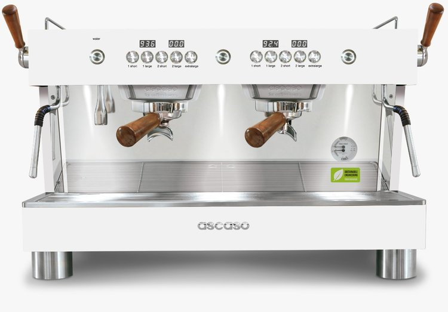
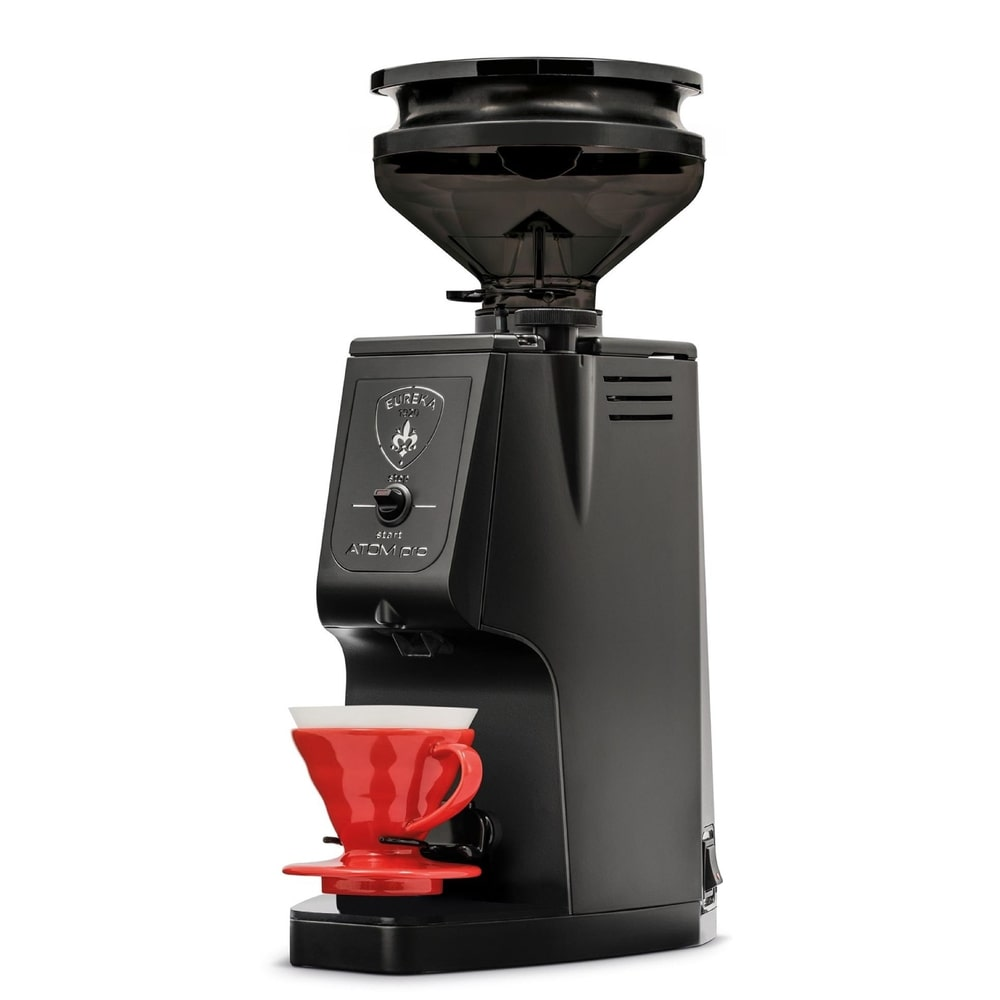
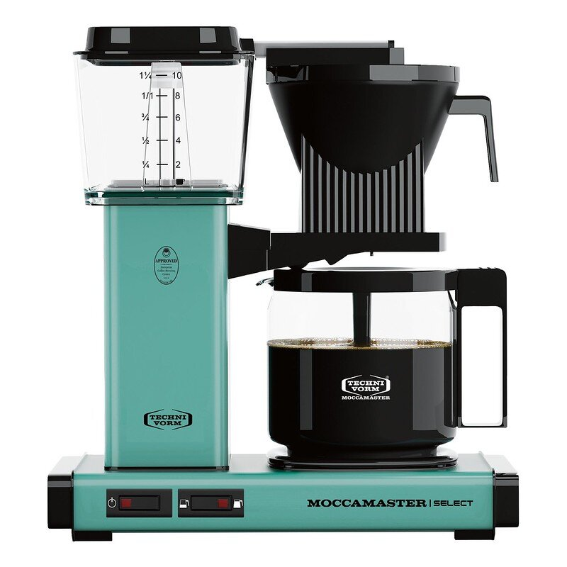

ASCASO
En 1950, J. Ascaso empieza a trabajar para un proveedor de componentes de máquinas espresso, cromando piezas. De 1952 a 1962 J. Ascaso trabajó en la línea producción Gaggia, en la manufactura de componentes para las máquinas de café de la marca en todo el mundo. Otros fabricantes de cafeteras llegan al mercado. El parque de máquinas espresso instaladas es cada vez mayor y precisa de mantenimiento y reparación. J. Ascaso decide fabricar componentes de todas las máquinas de café que existían en ese momento en el mercado. En 1962 Jesús Ascaso empezó su propio negocio para producir y distribuir recambios para máquinas de café espresso. Actualmente, Ascaso vende sus productos en más de 95 países y continua su expansión, creando nuevas divisiones de negocio como la fabricación de cafeteras espresso. JL. Ascaso, hijo del fundador, es el autor de la diversificación de Ascaso Factory en los últimos años. Se embarcó en la fabricación de máquinas de café espresso para unir los conocimientos técnicos con la cultura del espresso. La filosofía “for coffee lovers” había nacido.
EUREKA
Eureka es una marca Italiana con alta tradición en la fabricación de molinos con cualidades bastante específicas, se caracterizan por ser molinos con un aspecto un tanto industrial, pero que cada vez desarrollan con una estética más colorida generando una identidad bastante fácil de reconocer. Todo este aspecto semi-industrial lo usan para mostrar una de sus mayores características, Eureka siempre desarrolla molinos que duren en el tiempo, motores acorde a las exigencias de uso y muelas endurecidas, de modo que se pueda trabajar tranquilo sabiendo que las especificaciones que ofrecen las cumplirá.
MOCCAMASTER
Technivorm es el fabricante de las cafeteras y molinillos de café Moccamaster. Las cafeteras de filtro Moccamaster son el resultado de la dedicación de Technivorm al desarrollo de productos, la investigación y una combinación de calidad artesanal y tecnología precisa, produciendo la mejor taza de café desde 1968. Solo se utilizan materiales reciclables de alta calidad y se procesan para crear una máquina de café confiable. Moccamaster tiene un diseño modular, lo que hace que las piezas individuales sean fáciles de reemplazar y reparar. Además, Moccamaster es energéticamente eficiente y tiene una larga vida útil.
